Se ainda não leu, por favor comece pelo texto Recomendações e Introdução. Neste texto vamos utilizar o ficheiro 1ponto.mp4 (dados e ficheiro disponibilizados nesse texto) e é fortemente recomendado que aumente a memória RAM disponível para tarefas de tracking e edição de vídeo (explicação no mesmo texto).
Geralmente, o tracking de 4 ponto é uma técnica simples e rápida. É algo limitada mas suficiente para implementar alguns efeitos interessantes. O processo é muito similar ao do tracking de 1 ponto, apenas variando um pouco na janela 3D View. Recomenda-se a leitura do texto sobre tracking de 1 ponto antes de fazer este exercício porque diversos passos estão abreviados. Parte-se do princípio que quem está a fazer este exercício já fez o tracking de 1 ponto.
O primeiro passo foi a conversão do vídeo para uma sequência de imagens. No nosso caso, foram utilizadas 125 frames (5 segundos), desde a frame 3 até à 128, convertidas para Targa Raw para não perder qualquer pixel com compressão.
O segundo passo foi a importação da sequência de imagens para o Movie Clip Editor. Selecione o Movie Clip Editor, clique em Open. Selecione a primeira frame da sequência e clique em Open Clip.
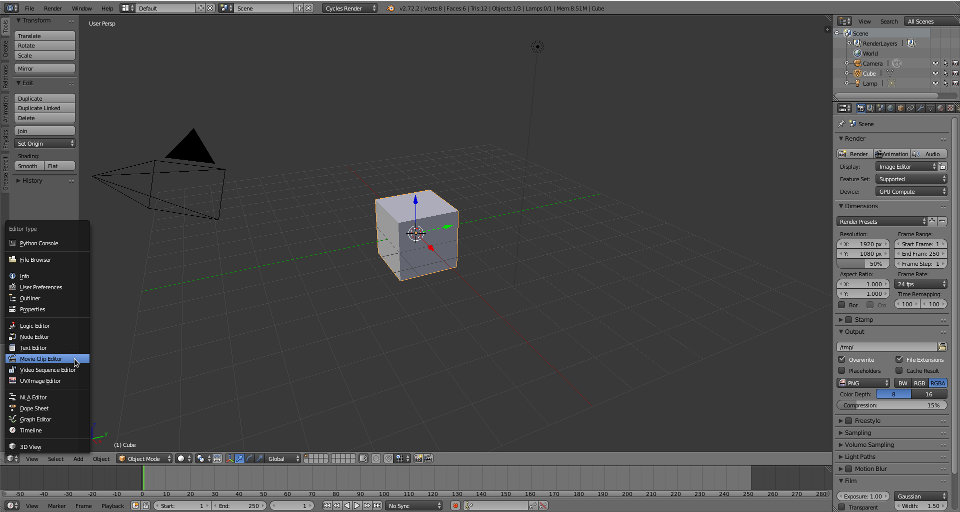 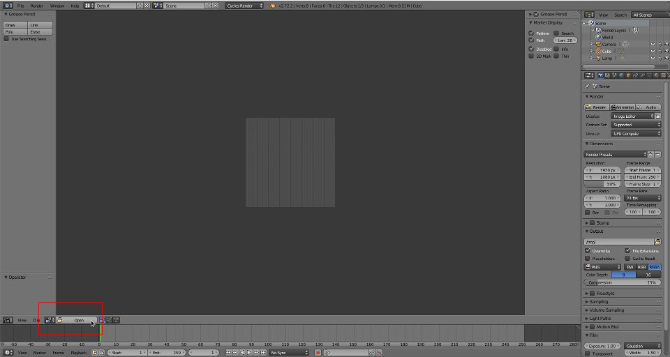 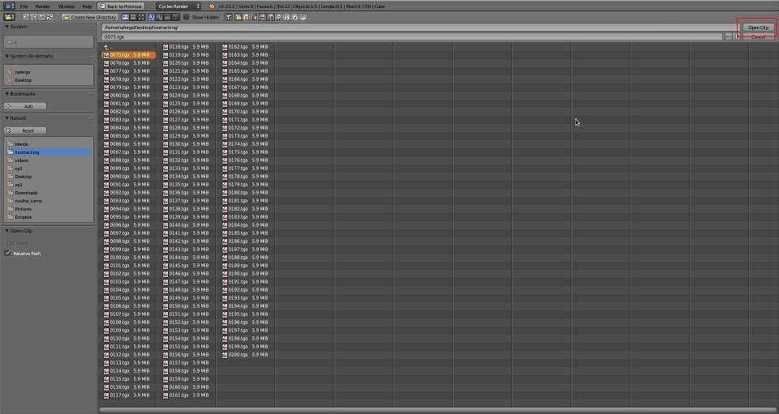Acertámos as configurações de renderização de acordo com os ficheiros de imagem e vídeo original (25 FPS, 1920x1080) e definimos a timeline para 125 frames (Start no 1 e End no 125) pois vamos trabalhar com 125 frames.
Através do Play Animation (Alt+A) inserimos a frames na cache.
Coloque-se na primeira frame a partir da qual pretende fazer tracking. No nosso caso, é a partir da frame 1 e, portanto, colocámos a timeline na frame 1.
Clique no botão Add do painel Marker, disponível na barra de ferramentas (barra à esquerda) e clique no local onde pretende fazer o tracking. Vamos fazer 4 trackings, um de cada vez.
Posicione o seu markers de forma similar aos das imagens abaixo e siga a seguinte sequência:
No nosso caso, decidimos fazer um redimensionamento da área pattern (aumentámos a área) para obter um bom contraste e definição nos cantos.
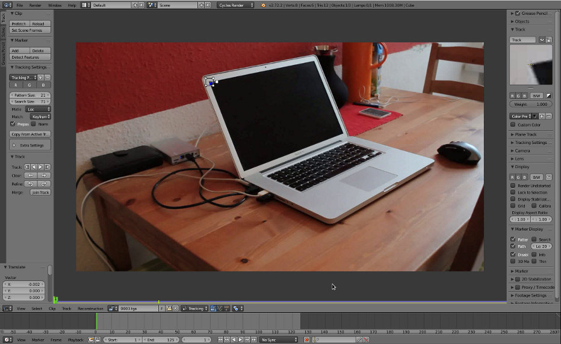Depois de ter as 4 tracks, selecione todos os markers e utilize a opção Link Empty to Track (menu Reconstructions).
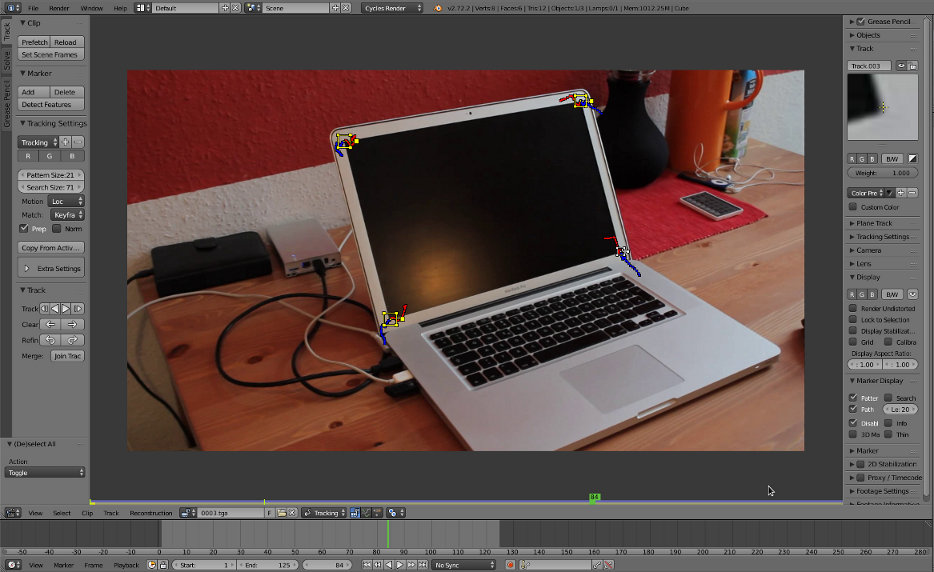 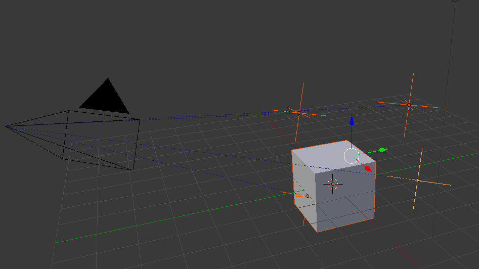Apague o cubo. Ative Background Image para a câmara, tipo Movie Clip, e selecione a sequência utilizada. Em visão de câmara deverá ver algo similar à imagem abaixo.
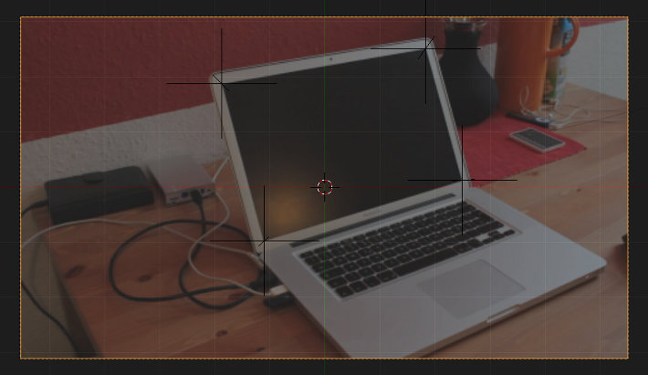Selecione os 4 Empties. Clique em Shift+S e escolha Cursor to Selected para colocar o cursor no centro dos 4 Empties.
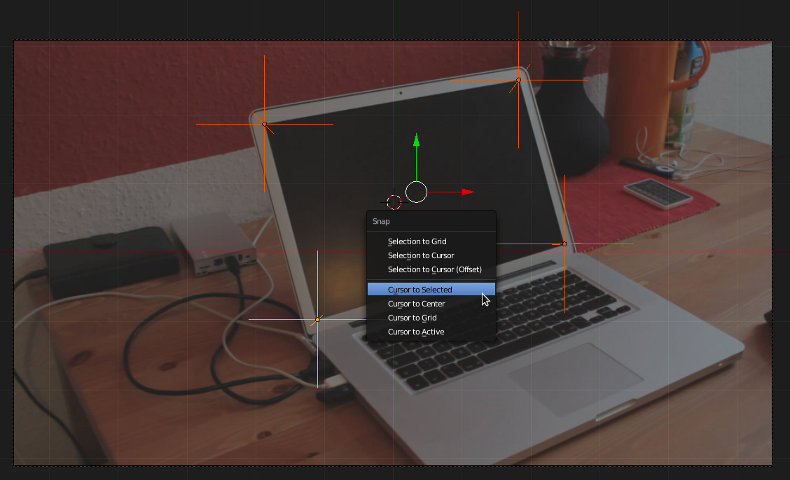Adicione um plano.
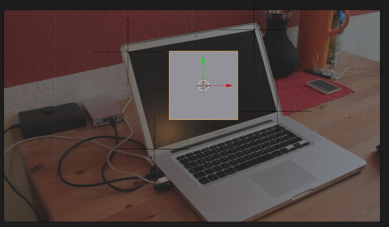Selecione o Empty do canto superior esquerdo e faça Shift+S, Cursor to Selected para colocar o cursor 3D no local do Empty.
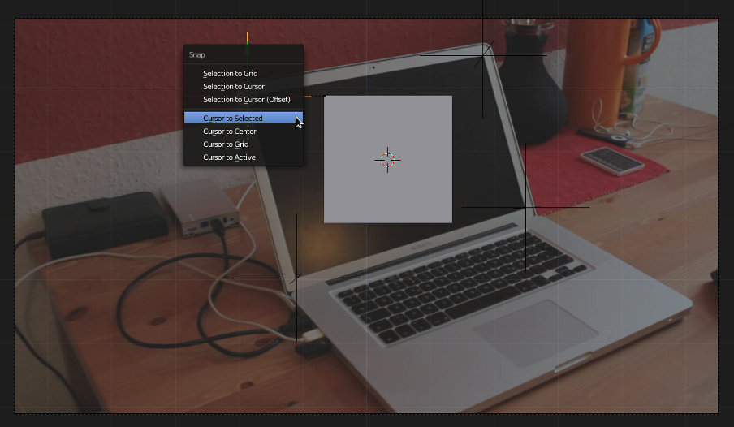Selecione o plano e ative o Edit Mode. Selecione o vértice mais próximo do canto superior esquerdo e faça Shift+S, Selection to Cursor para colocar o vértice no local do cursor 3D. Como este está no local do Empty, o vértice vai também ficar no local do Empty.
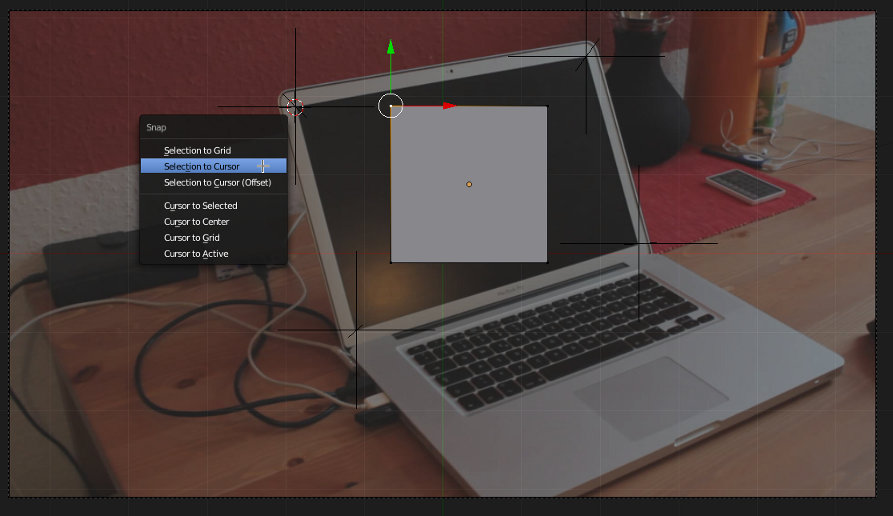 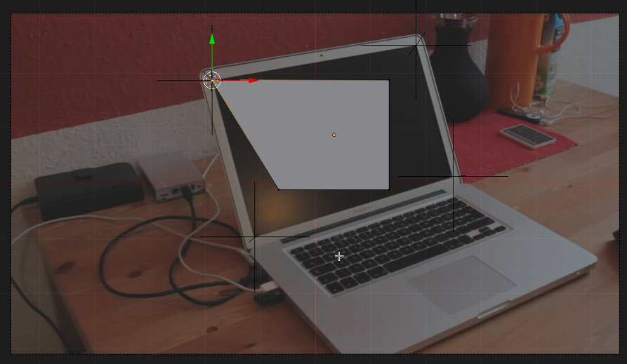Repita o processo até os 4 vértices do plano estarem alinhados com os 4 Empties.
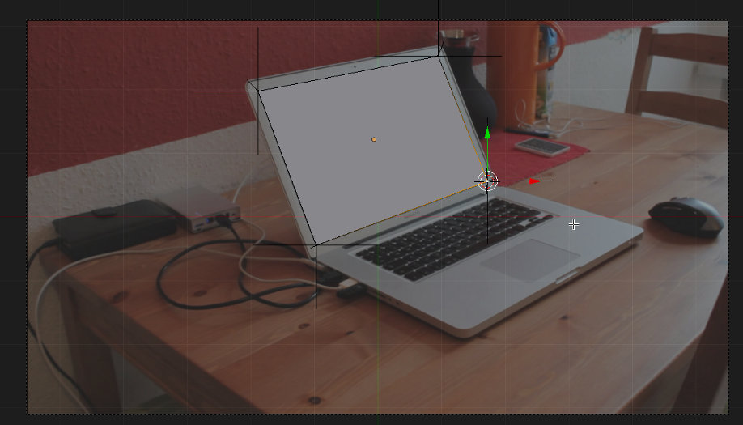Nesta frame, os 4 vértices do plano estão alinhados com os 4 Empties mas é preciso que os vértices acompanhem os Empties durante a sua movimentação. Selecione um Empty e depois o plano. Ative o Edit Mode e selecione o vértice que se encontra alinhado com o Empty selecionado. Clique em CTRL+H e escolha a opção Hook to Selected Object. O vértice vai ficar "preso" (hook significa anzol ou gancho) ao Empty.
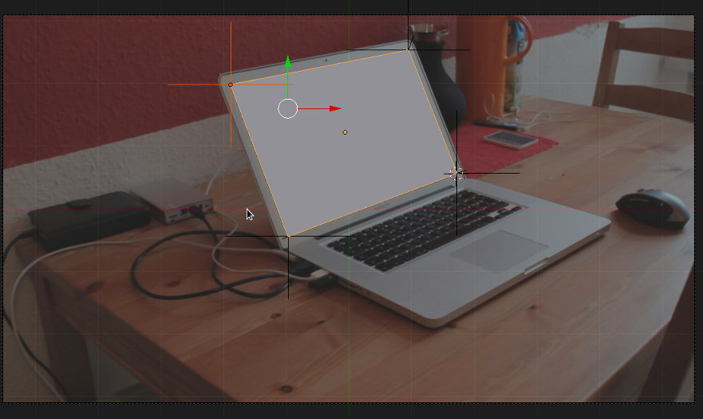 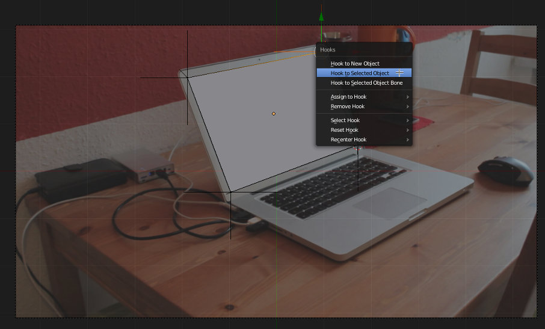Depois dos vértices estarem enganchados nos Empties, é altura de definir um material para o plano (pode ser vídeo!) e utilizar o compositor para sobrepor imagem renderizada à sequência original.
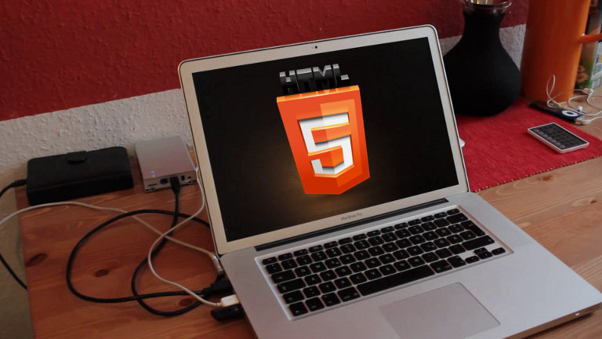